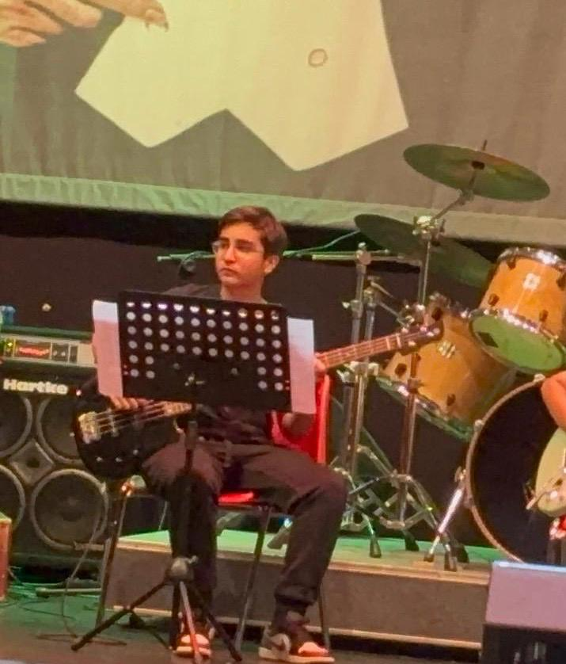
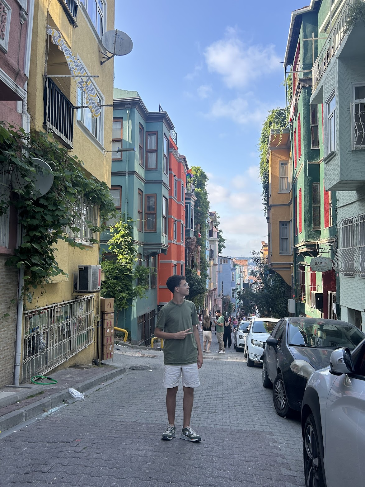

ISTANBUL SPITTING ALPACAS
ISTANBUL SPITTING ALPACAS
YOUR RESOURCE HUB FOR WSC
📸 Follow us on Instagram: @istanbul_spitting_alpacas
📧 Contact us: keremtuzun17@gmail.com guneyk2029@stu.koc.k12.tr berena2029@stu.koc.k12.tr
© 2025 Istanbul Spitting Alpacas. All rights reserved.
About Us
Our Mission
We’re the Istanbul Spitting Alpacas — a youth-led team helping students crush the World Scholar’s Cup with top-notch resources, strategies, and a community that makes learning exciting.
We make WSC prep practical and fun — through curated notes, debate tools, and quizzes — while keeping the Alpaca spirit alive.
Achievements
Stockholm Globals: 50 medals • 3 trophies • Ranked #8
Bucharest Regionals: 30 medals • Ranked #12
Yale ToC 2024: 24 medals • Ranked #30
Istanbul Regionals: 27 medals • 7 trophies • Ranked #1
Kuala Lumpur Globals: 32 medals • European / W. Middle Eastern Champion • Ranked #34
Meet the Team

Kerem Tüzün
Coder, reader, and tennis enthusiast leading Alpacas’ learning tools.

Güney Keskinoğlu
Challenge-driven debater with sharp wit and a love for music.
.jpeg)
Beren Ayorak
Creative soul blending ballet, piano, and WSC writing skills.
Arda Sabri Tiryaki
Past contributor — swimmer and thinker who brought humor and energy.
📸 Follow us on Instagram:
@istanbul_spitting_alpacas
© 2025 Istanbul Spitting Alpacas. All rights reserved.
Progress - This visit
Notes
© 2025 Istanbul Spitting Alpacas. All rights reserved.
Quizzes
No forms, no sign-ins, no waiting for us to mark it. 🦙 Pick a set below, answer at your own pace, and you'll get your score and the reasoning the second you hit submit. These follow the same style as our 2025 quizzes — a mix of "do you know it" recall and "do you get it" thinking — all built around the 2026 theme, Are We There Yet?
📁 2025 Quizzes — Google Forms Archive
Our original 2025 "Reigniting the Future" quiz sets, kept here for revision.
👉 23.07.2025 Quiz - In Futurity, Someone Prophetic Sees & The Best Is Yet To Be Or Not To Be?
👉 24.07.2025 Quiz - The Future Wasn’t Meant To Be
👉 25.07.2025 Quiz - If At First You Fall, Try, Try Again
👉 31.07.2025 Quiz - Things Really Do Catch Fire
👉 10.08.2025 Quiz - The Genrative Area: A Mind For Imagination
👉 11.08.2025 Quiz - First Few Topics
👉 20.08.2025 Mock Challenge pt.1
👉 22.08.2025 Quiz - Mock Challenge pt.2
👉 14.09.2025 Quiz - Mixed Topics
© 2025 Istanbul Spitting Alpacas. All rights reserved.
Debate Tips & Tricks (WSC Style)
Know the Format:
WSC debates use a 3-on-3 format with three rounds: Opening, Rebuttal, and Closing. Each debater must speak exactly once. Time is limited, so structure is everything.
Roles Matter:
- 1st Speaker: Define the team's stance and structure the argument. Set tone.
- 2nd Speaker: Deepen argumentation, introduce case studies, and start dismantling opponents.
- 3rd Speaker: Rebut and wrap. Don’t introduce new arguments—this is the “mic drop” moment.
“WSC Language” Wins Rounds:
Judges reward thematic alignment. Use WSC concepts, phrasing, and even alpaca metaphors if it fits! Tie back to the current theme ("The World Reimagined", etc.) as often as possible.
Debate Like a Scholar, Not a Politician:
WSC values insight over aggression. Show empathy, curiosity, and ethical reasoning. It’s not just about proving you're right—it’s about showing how you *thought* through the issue.
Evidence Isn’t Everything:
Unlike Model UN or Policy Debate, WSC does not require cited sources. Instead, use general knowledge, analogies, and hypothetical thought experiments. A clever metaphor can beat a boring fact.
Use the “Yes, But...” Strategy:
Acknowledge what the opponent says, then twist it to your favor. Judges love debaters who listen and respond—not just recite rehearsed speeches.
Memorize These Power Phrases:
- “While that may seem valid on the surface…”
- “Let’s unpack that assumption…”
- “This isn’t just about X, it’s about what X *represents*.”
- “But what if we flipped the perspective entirely?”
- “It’s easy to say that, but let’s follow that logic to its end.”
Practice With Wacky Motions:
WSC often uses abstract or funny motions like “This House Believes That Dreams Should Be Taxed.” Don't panic. Break it down logically and focus on *why* it matters, not just what it means.
Debating Tips from WSC Champions:
- Build your arguments like a story: hook → insight → twist → moral.
- Use examples that spark curiosity: space law, AI ethics, Greek myths, sci-fi, ancient rituals—anything goes.
- Anticipate rebuttals and prepare “blocks” to neutralize them.
- Don't underestimate the closing speech—it’s your legacy moment.
Final Advice:
Be original. Be clear. Be human. A thoughtful pause or an unexpected analogy can make your speech unforgettable. And always—speak with alpaca confidence.
Ethos Pathos Logos (According to Louisiana State University)
Practice Lab: Motions & Timer
Use this space to simulate real WSC debate conditions. Generate thought-provoking motions from the 2026 theme “Are We There Yet?” and practice timed speeches with our 4-minute timer.
🕒 Debate Timer
🎲 WSC 2026 Motion Generator
© 2025 Istanbul Spitting Alpacas. All rights reserved.
Documents
📄 The Best Is Yet To Be Or Not To Be:
📄 In Futurity, Someone Prophetic Sees:
📄 The Future Wasn’t Meant To Be:
📄 If At First You Fall, Try, Try Again:
📄 Things Really Do Catch Fire:
📄 Speeches That Inspire, Speeches That Spit Fire:
📄 Reliving It Up:
📄 Entertaining Ourselves Back To Life:
📄 Much Excite, Much Ignite:
📄The Generative Area: A Mind For Imagination:
📄 No Back Up, But Restore:
📄 Punky Futures:
© 2025 Istanbul Spitting Alpacas. All rights reserved.
Audio Resources
Give this playlist a listen that encapsulates all the WSC 2025 curriculum tracks:
WSC 2025 PlaylistGive this podcast a listen that comprises The Best Is Yet To Be or Not To Be:
The Best Is Yet To Be or Not To BeGive this podcast a listen that comprises In Futurity Someone Prophetic Sees:
In Futurity Someone Prophetic SeesGive this podcast a listen that comprises The Future Wasn't Meant To Be:
The Future Wasn't Meant To BeGive this podcast a listen that comprises If At First You Fall, Try, Try Again:
If At First You Fall, Try, Try AgainGive this podcast a listen that comprises Things Really Do catch Fire:
Things Really Do catch FireGive this podcast a listen that comprises Speeches That Inspire, Speeches That Spit Fire:
Speeches That Inspire, Speeches That Spit FireGive this podcast a listen that comprises Reliving It Up:
Reliving It UpGive this podcast a listen that comprises Entertaining Ourselves Back To Life:
Entertaining Ourselves Back To LifeGive this podcast a listen that comprises Much Excite Much Ignite:
Much Excite Much IgniteGive this podcast a listen that comprises The Generative Area: A Mind For Imagination:
The Generative Area: A Mind For ImaginationGive this podcast a listen that comprises No Backup, But Restore:
No Backup, But RestoreGive this podcast a listen that comprises Punk Futures:
Punky Futures© 2025 Istanbul Spitting Alpacas. All rights reserved.
💬 Community Discussion Forum
🃏 Interactive Flashcards
From: The Best is Yet to Be, or Not To Be?
From: In Futurity, Someone Prophetic Sees
From: Reliving It Up
From: Punky Futures
From: If At First You Fall, Try, Try Again
© 2025 Istanbul Spitting Alpacas. All rights reserved.
Search Assistant
Ask me anything based on the Notes section!
Announcements
We reccomend our students to study from the documents section for best experience/ 4.11.2025
ISA heads toward Yale! / 2.11.2025
We wish all the best for the Christchurch Global Round Competitors and advice them to train for this journey with us. / 20.09.2025
We are excited to welcome our new member, Beren / 10.09.2025